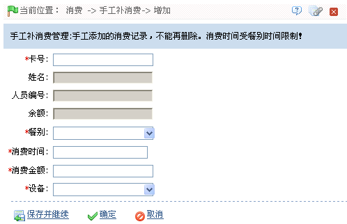
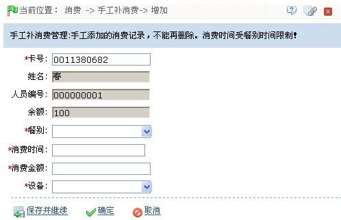

ID--8.4 手工补消费
当用户没有带卡时，可以先填一个单吃饭。下次带卡来时，可以通过手工补消费将上一次的消费记录补上。操作方法如下：
新增手工补消费
1、点击【消费】 【手工补消费】
【手工补消费】 【新增】，进入如下图所示手工补消费页面：
【新增】，进入如下图所示手工补消费页面：

2、在卡号后输入“消费单”上的卡号，或使用发卡器获取卡号；然后单击页面空白处，获取该卡号对应的卡信息：

选择“餐别”；并设置“消费时间”.(注意：“消费时间”必须在所选“餐别”的消费时间内。)
输入“消费金额”；并选择消费“设备”。
3、设置完成后，单击【确定】按钮开始为该卡补消费；成功后自动返回手工补消费页面；此时页面中将显示刚新增的消费记录。
（1）、餐别资料的设置请参见ID--8.2.4 餐别资料。
（2）、设备的新增请参见5.2.2 新增消费设备。
（3）、无法删除已添加的手工补消费记录。
（4）、手工补消费记录查询和日志记录查看方法，请参见附录1 常用操作。